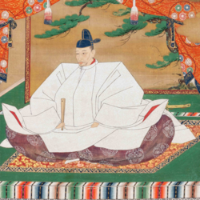

豊臣秀吉
1537年〜1598年
戦国・安土桃山時代の武将。幼名は日吉丸という。尾張中村に生まれ、15才で武士を志して織田信長に仕えた。初め木下藤吉郎と称したが、戦功を重ね信長に重用され、近江長浜城主となり、羽柴と改姓した。本能寺の変の際には中国毛利攻めの先鋒として備中高松城を攻めていたが、報を聞き急きょ和陸、兵をとって返し、山崎の合戦で明智光秀を破る。ついで、柴田勝家を賤ヶ岳の戦いで破り、大阪城を築城する。1585年には関白、翌1586年には太政大臣となり、豊臣の姓を賜る。1585年に四国討伐。1590年には島津（九州征伐）のち北条氏（小田原征伐）を、さらに奥州平定し天下統一の業を完成した。1591年に関白を養子秀次に譲り、朝鮮・明国への侵略を企てて文禄・慶長の役をおこしたが失敗した。政治的には太閣検地・刀狩・京枡の制定などを行って土地・人民を掌握し、近世幕藩体制の基礎を確立するなど、政治かとしても大きな業績をあげた。一方で、性格面では豪放にして華美を好み、大阪城・聚楽第の造営など、華麗な桃山文化をおこした。